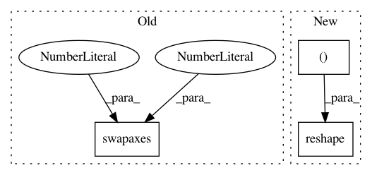

c7585e649aca88cf9e21eb754469630748bb1cfc,tests/attacks/test_knockoff_nets.py,TestKnockoffNets,test_pytorch_classifier,#TestKnockoffNets#,142
Before Change
// Create random attack
attack = KnockoffNets(classifier=victim_ptc, batch_size_fit=BATCH_SIZE, batch_size_query=BATCH_SIZE,
nb_epochs=NB_EPOCHS, nb_stolen=NB_STOLEN, sampling_strategy="random")
self.x_train = np.swapaxes(self.x_train, 1, 3)
thieved_ptc = attack.extract(x=self.x_train, thieved_classifier=thieved_ptc)
victim_preds = np.argmax(victim_ptc.predict(x=self.x_train), axis=1)
thieved_preds = np.argmax(thieved_ptc.predict(x=self.x_train), axis=1)
After Change
self.assertGreater(acc, 0.4)
self.x_train_mnist = np.reshape(self.x_train_mnist, (self.x_train_mnist.shape[0], 28, 28, 1)).astype(np.float32)
class TestKnockoffNetsVectors(TestBase):
In pattern: SUPERPATTERN
Frequency: 3
Non-data size: 3
Instances
Project Name: IBM/adversarial-robustness-toolbox
Commit Name: c7585e649aca88cf9e21eb754469630748bb1cfc
Time: 2020-01-27
Author: beat.buesser@ie.ibm.com
File Name: tests/attacks/test_knockoff_nets.py
Class Name: TestKnockoffNets
Method Name: test_pytorch_classifier
Project Name: IBM/adversarial-robustness-toolbox
Commit Name: 9e35d1e5ebdf1c379b6c84c642fa164a9fa22d9a
Time: 2020-01-16
Author: beat.buesser@ie.ibm.com
File Name: tests/attacks/test_copycat_cnn.py
Class Name: TestCopycatCNN
Method Name: test_pytorch_classifier
Project Name: bashtage/linearmodels
Commit Name: dfe9b6fcc302547b54b5e079b4d6953b03486dd7
Time: 2017-03-18
Author: kevin.k.sheppard@gmail.com
File Name: linearmodels/panel/tests/test_data.py
Class Name:
Method Name: test_numpy_3d